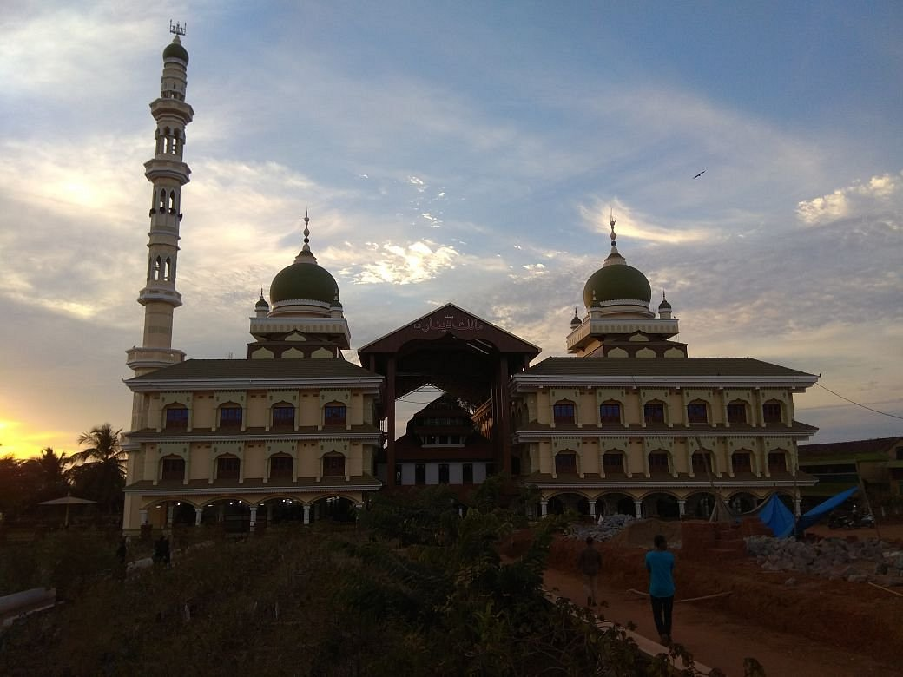
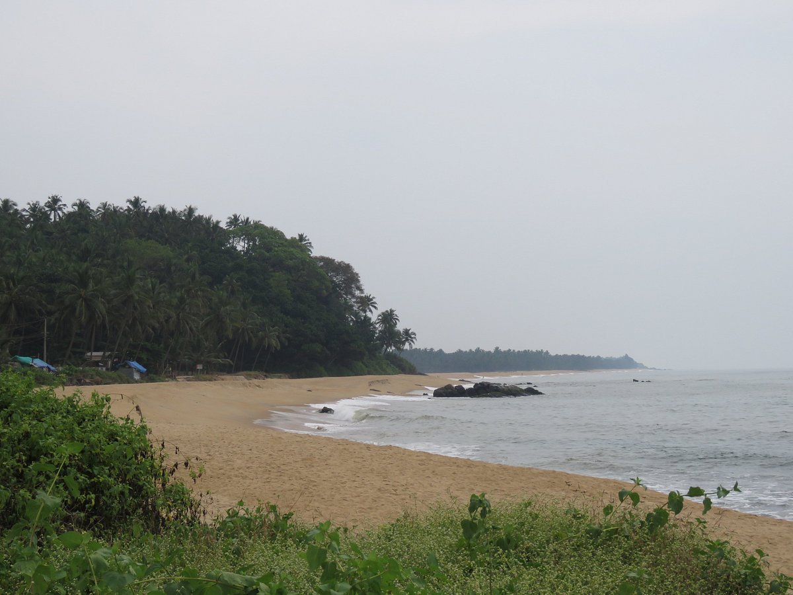

Bekal-Fort

The largest fort in Kerala, Bekal Fort, is situated on 40 acres of land in the Kasaragod district. This 300-year-old fort narrates tales of military expeditions, the history of Malabar and much more.
Ranipuram-Hills

Switch on the adventurous spirit and head to Ranipuram. The tourist destination in Kasaragod known for its spellbinding beauty doubles up as a picnic spot .
Ananthapuram lake temple

The only Lake temple of Kerala is situated in a sleepy hamlet ‘Ananthapura’ in Kasaragod district, Kerala..
Malik Dinar Mosque
Believed to have been founded by Persian scholar and traveller Malik Ibin Deenar, this historic mosque itself is a true wonder.
Kottancherry Hills

Lush vegetation and undulating hilly terrain have made Kottancherry Hills near Konnakad in Kasaragod district a trekkers’ paradise.
Chembirika Beach
Chembirika Beach is a beautiful beach with a long stretch of golden sand, clear blue waters, and lush green trees lining the beach. It is an ideal place to relax and unwind.